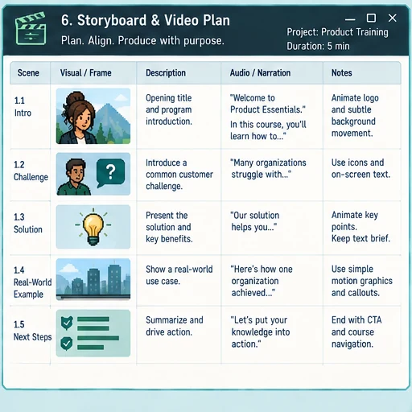
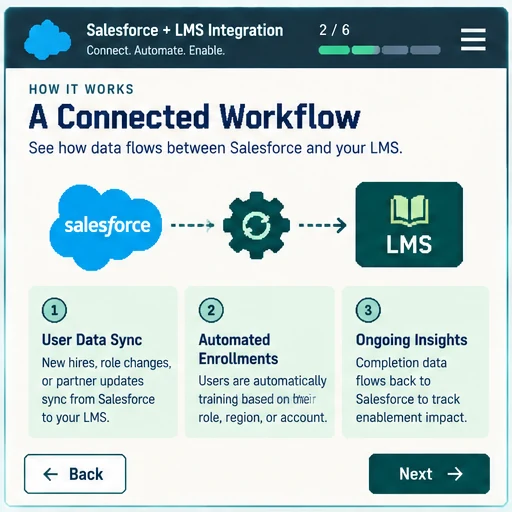

Scope
Identify the seller task, audience, source material, and what does not belong in the learning.
Experience
I started as a high-school history and English teacher and now design enterprise learning for sales and partner audiences. My projects range from product launches and microlearning to certification paths and live workshops, with additional hands-on work in LMS administration, AI evaluation, reporting automation, and multimedia production.



Instructional design is the center of my work, but the project can extend into evaluation, platform operations, automation, or facilitation depending on what has to be delivered.
eLearning
I translate product, technical, and sales content into courses, microlearning, scenarios, assessments, and certifications for internal sellers and partners.
Identify the seller task, audience, source material, and what does not belong in the learning.
Choose the format, sequence, scenarios, assessments, and supporting resources.
Develop in tools such as Rise and Storyline, then coordinate SME review and QA.
Test delivery in the LMS, resolve issues, and keep source files ready for future updates.
What I focus on